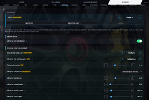

OmegaSim Wiki – die Idee dazu stammt von Gnen54. Hier stehen die offenen Artikel von Nutzer Luuke42 unter der Lizenz CC BY-SA 4.0.
Safety Car und Reinigungswagen
Stand dieses Artikels: OmegaSim 1.2.9 vom 26.10.2026 · Firmware des Autos: nicht bekannt (OmegaSim liest die Firmware-Version nicht aus)
Dieser Text wurde mithilfe von KI erstellt (Claude) und ist nicht in jedem Punkt von Menschen geprüft. Fehler bitte direkt verbessern oder auf der Diskussionsseite melden, siehe Mitmachen. Die öffentliche Fassung auf luuke42.github.io/omegasim kann älter sein als der hier beschriebene Stand.


Das Safety Car ist in OmegaSim eine Garagenrolle, mit der ein echtes Carrera HYBRID-Auto selbstständig als Sicherheitsfahrzeug fährt: Es parkt am Rand der Bahn, fährt bei gelber Flagge los, das Feld schließt dahinter auf und überholt nicht, und nach Grün kehrt es auf sein Einpark-Teil zurück und parkt dort mit einer aufgenommenen Lenk- und Gasfolge. Der Reinigungswagen (in der App „Reinigungsfahrzeug“, in Arbeit) ist eine verwandte Rolle, die die Bahn in drei Runden mittig, links und rechts abfährt. Beide Rollen nutzen die Steuerung der NPCs (siehe NPC-Fahrverhalten) mit eigenen Zusatzregeln; sie gibt es nur beim Fahren auf der Bahn und jeweils nur für ein Auto.
Auf einen Blick
| Merkmal | Wert |
|---|---|
| Menüpfad | Rolle: FAHREN → Autos → Garage, erste Zeile rechts; Einstellungen: Optionen → Safety Car; Gelbe Flagge: Knopf im Cockpit oder Taste; Reinigung starten: Knopf Reinigungsfahrzeug starten im FAHREN-Menü |
| Wichtigste Schalter (Standard) | erst aufschließen: an · Parkplatz: Fahrbahn · Ein- und Ausparken: Aufnahme · Gas beim Ausparken: 1,5× · Einpark-Teil: Start/Ziel · Heimtempo 50 % · Einparktempo 30 % |
| Status | Safety Car stabil (Kennzeichnung „experimentell“ und „WIP“ im 1.0-Abschnitt entfernt); Ein-/Ausparken mit Aufnahme, Parkplatzwahl und Gas beim Ausparken: in Arbeit bzw. experimentell; Reinigungswagen: in Arbeit |
| Seit Version | Safety Car seit 0.10.7 (experimentell); Aufnahme-Parken seit 1.1.30; Parken auf kurzen Geraden seit 1.2.4; Reinigungswagen seit 1.0.45 |
| Beteiligte Quelldateien | src/90-ghosts.js (alles Wesentliche), src/70-race.js (Rundenzählung, Gelb-Tempo, Knopf), src/50-drive.js (Autopilot des Fahrerautos), src/51-konsole.js (Knopf Reinigung), src/00-index.head.html (Optionen)
|
Grundlagen
Safety Car im Motorsport
Im echten Rennsport fährt ein Safety Car nach einem Unfall vor das Feld. Alle fahren langsam dahinter, überholt wird nicht, die Abstände schrumpfen. Mit Grün biegt es ab, und das Rennen geht weiter. OmegaSim bildet genau diese drei Teile nach: Gelbphase, Kolonnenfahrt, Rückkehr.
Zustandsmaschine
Das Verhalten ist eine Zustandsmaschine: Die Flagge und das Safety Car haben jeweils benannte Zustände (zum Beispiel „gelb“, „Heimweg“, „einparken“), und feste Bedingungen schalten von einem in den nächsten. Unten stehen sie als Tabellen Zustand | Bedingung | nächster Zustand. Der Vorteil: Jeder Moment ist eindeutig beschrieben, und ein Fehler lässt sich einem Übergang zuordnen.
Gesteuert, nicht geregelt
Das Auto meldet seine Querlage nicht (siehe NPC-Fahrverhalten#Grundlagen). „Rechts am Rand parken“ ist deshalb eine Steuerung ohne Rückmeldung: Die App schickt eine Folge von Lenk- und Gaswerten, von der man weiß, dass sie beim Aufnehmen funktioniert hat, und hofft, dass das Auto sie gleich ausführt. Eine Aufnahme ist dabei eine Liste von Punkten [Zeit in ms, Lenkung −1 bis +1, Gas 0 bis 1], die von Hand gefahren und mitgeschrieben wurde.
Kachel, Teil, Phase
Die Bahn besteht aus Teilen (Kacheln) von 43 cm Länge bei einer Geraden. Das Auto meldet beim Überfahren eines Teils einen Zählersprung und den Teilecode, etwa 0x01 für Start/Ziel auf der Bahn (Schreibweise siehe Hexadezimalsystem). Wo das Auto auf einem Teil steht, schätzt die App aus Zeit und Tempo. Deshalb fährt das Safety Car erst dann zum Parkplatz, wenn es seit dem Losfahren einmal über Start/Ziel gefahren ist: erst dann ist die Teilezählung sicher abgeglichen.
Anteil des Gasbytes
Alle Tempoangaben sind Anteile des Gasbytes (0 bis 1, gesendet als 0 bis 127 Gasschritte). 0,35 entspricht Δ 44, rund 0,52 m/s.
Bedienung
Safety Car einrichten
- Unter FAHREN → Autos → Garage das Auto wählen.
- In der ersten Zeile rechts die Rolle mit den Pfeilen auf Safety Car stellen. Ein anderes Auto mit dieser Rolle verliert sie dabei nicht; die Rolle ist nur wählbar, solange kein anderes Auto sie hat.
- Prüfen, dass auf der Bahn gefahren wird (Leseart „Bahn“) und ein Streckenlayout vorliegt (gebaut im Strecken- und Raum-Editor oder eingescannt).
- Unter Optionen → Safety Car Parkplatz, Parkart und Tempi einstellen. Eine Führung steht unter Optionen → Tutorials → Safety Car.
- Rennen starten. In der Stellung „Fahrbahn“ fährt das Safety Car vom letzten Startplatz aus die erste Runde hinter dem Feld mit und parkt danach.
Gelbe Flagge ausrufen und freigeben
- Im Cockpit auf Gelbe Flagge tippen (ein Tipp genügt) oder am Controller die Taste Kreuz/A eine Sekunde halten (kurz tippen fordert dagegen einen Boxenstopp an). Ein Ladebalken im Knopf zeigt das Halten an.
- Das Safety Car fährt los, alle Autos drosseln, niemand überholt. Das eigene Auto übernimmt der Autopilot.
- Zum Freigeben erneut tippen bzw. halten: Die Startampel läuft, danach ist Grün.
- Der Schalter Gelbe Flagge deaktivieren in den Renneinstellungen sperrt das Ausrufen.
Reinigungswagen
- In der Garage einem Auto die Rolle Reinigungsfahrzeug (WIP) geben.
- Im FAHREN-Menü auf der Autos- oder der Streckenkachel Reinigungsfahrzeug starten drücken.
- Das Auto fährt bis Start/Ziel, dann drei Runden, und hält; die App meldet „Bahn gereinigt“.
Einstellungen
Optionen → Safety Car
| Name in der App | Bereich/Werte | Standard | Wirkung laut Code | Schlüssel |
|---|---|---|---|---|
| Safety Car: erst aufschließen | an/aus | an | an: wer mehr als zwei Teile hinter dem fahrenden Safety Car liegt, fährt mit 0,45 heran; sonst Gelb-Tempo 0,4025 | race-sc-aufschliessen
|
| Wo parkt das Safety Car? (experimentell) | Fahrbahn; Fahrbahn, wartet bis Gelb | Fahrbahn | Fahrbahn: fährt die erste Runde mit; „wartet“: ohne Startrunde. Die frühere Stellung „Neben der Strecke von Hand“ ist im Menü verborgen, alte Sicherungen werden auf „Fahrbahn“ umgestellt | sc-parkplatz
|
| Safety Car: Ein- und Ausparken (WIP) | Aufnahme; Lenkimpuls | Aufnahme | Einparken mit MANOEVER.scEin, Ausparken mit MANOEVER.scAus; oder Rechts-/Links-Impuls aus den Reglern |
sc-park-art
|
| Gas beim Ausparken (WIP) | 1,0–3,0× | 1,5× | Faktor auf das Gas der Ausparkfolge (je Punkt höchstens 1), Lenkung und Zeiten bleiben | sc-aus-gas
|
| Safety Car: Einpark-Teil (experimentell) | Start/Ziel (jede Strecke); automatisch (gemessen); Teil 1 … n der geladenen Strecke | Start/Ziel | Parkplatz scParkKachel(); eine Teilnummer gilt nur für eine Strecke mit derselben Teilezahl |
sc-ausfahrt-teil
|
| Safety Car: Heimtempo | 30–100 % | 50 % | Höchsttempo nach Grün auf dem Heimweg, mindestens 0,30 | sc-heimtempo
|
| Safety Car: Einparktempo | 30–100 % | 30 % | Tempo der Lenkimpulse (nur Parkart „Lenkimpuls“) | sc-einfahrt-tempo
|
| Safety Car: Rechts-Impuls | 0–2000 ms | 100 ms | Dauer voll rechts eingeschlagen (Lenkimpuls) | sc-ausfahrt-ms
|
| Safety Car: Links-Impuls | 0–2000 ms | 100 ms | Dauer voll links danach (Lenkimpuls) | sc-ausfahrt-links-ms
|
| Safety Car: Räder am Ende | 0–100 % | 20 % | Einschlag nach links in der Haltephase des Lenkimpulses | sc-endlenk-pct
|
Nur in der verborgenen Stellung „Neben der Strecke von Hand“ wirken außerdem die ebenfalls verborgenen Regler Anfahrt (1–6 Teile, 3), Rand-Vorlauf (0–6, 2), Ausfahrt-Zeitpunkt (−5 bis +5 Teile in Vierteln, −2,75), Gegenschub nach Rechts-Impuls (0–500 ms, 100) und Gegenschub nach Links-Impuls (0–500 ms, 450) (sc-einfahrt-kacheln, sc-rand-vorlauf, sc-ausfahrt-kachel, sc-gegenschub-rad-ms, sc-gegenschub-ms).
Zugehörige Renneinstellungen
| Name in der App | Bereich/Werte | Standard | Wirkung laut Code | Schlüssel |
|---|---|---|---|---|
| Gelbe Flagge deaktivieren | an/aus | aus | an: setFlag('yellow') zeigt nur „Gelbe Flagge ist deaktiviert“ |
race-gelb-aus
|
| Einparken in der Aufstellung | Aufnahme; Lenkimpuls | Aufnahme | Startaufstellung mit der Safety-Car-Folge (rechts) bzw. gespiegelt (links) | race-einpark-art
|
| Einparken: Gas der Safety-Car-Folge (WIP) | 40–100 % | 70 % | Faktor auf das Gas von scEin beim Aufstellen |
race-einpark-sc-gas
|
| Einparken: Einlenkstärke | 0–100 % | 100 % | Stärke des Lenkimpulses beim Aufstellen | race-einpark-staerke
|
| Einparken: Lenkimpuls | 10–300 ms | 100 ms | Impulsdauer beim Aufstellen (Parkart Lenkimpuls) | race-einpark-ms
|
| Einparken: Tempo | 15–60 % | 30 % | Tempo des Impulses beim Aufstellen | race-einpark-tempo
|
Funktionsweise
Rollen und Voraussetzungen
- Die Rollen
safetycarundreiniggehören zu den Bahnrollen (BAHN_ROLLEN). Im Ausdruck-Modus sind sie nicht wählbar; beim Wechsel dorthin werden sie auf „Aus“ gestellt, und Rennstart sowie Meisterschaft warnen, wenn dort noch ein Safety Car steht. - Je Rolle höchstens ein Auto (
garRollenFrei()). - Das Safety Car zählt keine Runden und steht nicht im Ergebnis: Eine Start/Ziel-Überfahrt ruft für diese Rolle nur
safetyCarLinie()auf.[1] - Für Parkplatz und Teilezählung braucht die App ein Layout mit mindestens drei Teilen.
- Beide Rollen fahren über
ghostTick(). Das Safety Car steht im Feld (ghostFieldRacing()), damit die anderen ihm ausweichen und es nie überholen; der Reinigungswagen steht nicht darin.
Gelbphase: Zustandsmaschine der Flagge
Die Flagge hat drei Zustände (flagState):[2]
| Zustand | Bedingung | nächster Zustand | Was beim Übergang passiert |
|---|---|---|---|
| green | Knopf getippt oder Taste 1000 ms gehalten, Gelb nicht deaktiviert | yellow | Tempogrenze des Fahrerautos auf 0,45 (mit Safety Car und „aufschließen“) bzw. 0,4025; safetyCarRaus(); laufende Angriffe aller NPCs werden abgebrochen; Ampel aus; Meldung „GELBE FLAGGE“
|
| yellow | erneut getippt bzw. gehalten | restart | Startampel: Licht 1 bis 5 bei 600, 1600, 2600, 3600 und 4600 ms (Töne 440 bis 680 Hz); in dieser Zeit ist der Knopf gesperrt |
| restart | 4600 ms + Zufall 1000 bis 3000 ms | green | Ampel „Go“ (880 Hz), Tempogrenze 1, safetyCarHeim(): das Safety Car fährt heim
|
Das Rennende beendet eine laufende Gelbphase ebenfalls.
Tempo unter Gelb
Die Grundgröße ist das Gelb-Tempo
gelbGrenze = max(80 km/h ÷ Höchsttempo, 0,35) × 1,15 = max(0,271; 0,35) × 1,15 = 0,4025
mit 0,35 als Leseschwelle und 1,15 als Anhebung, damit niemand mit Kurvendrosselung und Abstandsregel „verhungert“.[3] Für jedes Auto (NPC und Autopilot des Fahrerautos) gilt dann:
Ziel_Gelb = min(Ziel, gelbZielFuer(Auto)) × gelbAbstandFaktor
Ziel_Gelb = min(Ziel_Gelb, scFolgeDeckel)
gelbZielFuer = 0,45 wenn „aufschließen“ an, Safety Car fährt und mehr als 2 Teile voraus
= 0,4025 sonst (auch für das Safety Car selbst)
gelbAbstandFaktor = 1 Abstand zum Vordermann ≥ 1,5 Teile
= 0,7 + 0,3 × clamp((Abstand − 0,5)/1,0, 0, 1) sonst
scFolgeDeckel = Ziel_SC × (0,9 + 0,1 × clamp((Abstand_SC − 0,5)/1,0, 0, 1)) wenn das SC < 1,5 Teile voraus
Danach folgen die üblichen Schritte der NPC-Kette (Kurvendrosselung, Mindesttempo 0,37, Haarnadel-Höchsttempo 0,35); Staffel, Würze und Überholen sind unter Gelb aus, die Querlage ist 0 (mittig). Für das Safety Car selbst gelten seit 1.1.41 dieselben Grenzen (autopilotGelbGrenzen(): Boden min(0,37; Grundtempo), in Haarnadeln höchstens 0,35). Gemessen auf der Geraden ergibt das 0,4025 (Δ 51), in Kurven 0,37 (Δ 47), in der Haarnadel 0,35 (Δ 44), für Feld und Safety Car gleich.[4]
Unter Gelb blinkt das Safety Car (Scheinwerfer 250 ms an je 750 ms); die übrigen Autos wechseln Scheinwerfer und Bremslicht im 520-ms-Takt. Am Ende der Phase bleibt das eigene Auto beim Autopiloten, bis der Ton-Countdown abgelaufen ist, und übernimmt dann sein aktuelles Tempo.
Zustandsmaschine des Safety Cars
| Zustand | Bedingung | nächster Zustand |
|---|---|---|
Startrunde (scErsteRunde; nur „Fahrbahn“) |
Start/Ziel überfahren nach mindestens max(2; n/2) gezählten Teilen, oder spätestens nach n + 2 Teilen (n = Teilezahl); die Einführungsrunde zählt nicht | Heimweg |
geparkt (Licht aus, scGeparkt) |
gelbe Flagge | Losfahren |
| Losfahren | Ausparkfolge zu Ende | Gelb-Fahrt |
| Gelb-Fahrt | Grün | Heimweg |
Heimweg (scHeim) |
Teil = Parkplatz und Ort an Start/Ziel abgeglichen | Einparken |
Einparken (randHalt) |
Folge und Haltezeit zu Ende | geparkt |
| Einparken | gelbe Flagge | zu Ende einparken, 300 ms danach Losfahren, falls noch Gelb |
| Heimweg | gelbe Flagge | Gelb-Fahrt (Heimweg wird abgebrochen) |
| beliebig fahrend, „Bahn verlassen“ geparkt | 1500 ms vergangen, weniger als 4 Neustarts in dieser Gelbphase | weiterfahren (selbst neu gestartet) |
Startrunde. Das Safety Car startet vom letzten Startplatz (gridPosOf() gibt ihm die Nummer hinter allen anderen), fährt höchstens das Formationstempo 0,35 × Abstandsfaktor und setzt nie zum Überholen an. Beim fliegenden Start zählt die Einführungsrunde nicht mit.
Heimtempo. Auf dem Heimweg gilt Ziel = max(0,30; min(Ziel; Heimtempo)). Ab zwei Teilen vor dem Parkteil fährt es mittig (scVorParkMittig(): Querlage 0), damit die Einparkfolge aus der Mitte beginnt.
Parkplatz: scParkKachel
// src/90-ghosts.js, scParkKachel()
function scParkKachel() {
const n = currentTrackTiles ? currentTrackTiles.length : 0;
const w = n ? scTeilWahl(n) : null; // Auswahl im Menü
if (w !== null) return w;
const s = ortStartIndices(currentTrackTiles || []);
return s.length ? s[0] : 0; // erstes Start/Ziel-Teil, sonst Teil 0
}
scTeilWahl() liefert bei „Start/Ziel (jede Strecke)“ das erste Teil mit Start/Ziel-Code, bei einer gemerkten Teilnummer i/n das Teil i, aber nur, wenn die geladene Strecke wieder n Teile hat, und bei „automatisch“ nichts, sodass das erste Start/Ziel-Teil aus der Ortung gilt. Die Wahl wird gespeichert.
Einparkfolge: MANOEVER.scEin und scAusSkript
Die Folgen wurden am 21.10.2026 von Hand im Pacejka-Modus aufgenommen und sind im Code als Punkte [ms, Lenkung, Gas] hinterlegt; das Gas ist dabei schon mit dem damaligen Höchstgeschwindigkeitsfaktor 1,8 multipliziert. Gelenkt wird mit Lenkbyte-Werten, positiv ist rechts.[5]
scEin (Einparken, 1710 ms):
| Zeit | Lenkung | Gas | Bedeutung |
|---|---|---|---|
| 0–40 ms | 0 | 0,233 | gerade |
| 41–402 ms | +0,86 bis +0,997 | 0,231 → 0,215 | nach rechts an den Rand |
| 403–539 ms | +0,51, dann 0 | 0,213 → 0,209 | Räder gerade |
| 540–760 ms | −1, zuletzt −0,69 | 0,207 → 0,199 | gegenlenken, Auto parallel stellen |
| 761–1079 ms | 0 (kurz −0,13) | 0,197 → 0,186 | geradeaus rollen |
| 1080–1211 ms | −1 | 0,184 → 0,173 | Räder zur Bahn |
| 1212–1710 ms | 0 | 0,164 → 0 | ausrollen bis Stillstand |
Davor gleitet das Gas in 300 ms (MANOEVER_ANPASS_MS) linear vom zuletzt gesendeten Wert (höchstens 0,8) auf den ersten Wert der Folge, mit geraden Rädern. Nach der Folge folgen 800 ms Halt mit voller Bremse, dann wird das Auto gestoppt, das Licht geht aus (safetyCarFertig()).
scAus (Ausparken, 2208 ms): 0–49 ms Stillstand, dann bis 1488 ms Lenkung −1 bis −0,87 (zur Bahn) bei Gas von 0 langsam bis 0,09, ab 1538 ms Lenkung +0,24 bis +0,93 (Auto wieder gerade richten) bei Gas 0,09 bis 0,117, ab 2118 ms Räder gerade. scAusSkript() multipliziert jedes Gas mit dem Regler „Gas beim Ausparken“:
Gas_gesendet(t) = min(1, Gas_Aufnahme(t) × Gasfaktor) Gasfaktor 1,0 … 3,0, Standard 1,5
Grund: Die Aufnahme beginnt mit sehr wenig Gas (0,005 bis 0,04 in der ersten halben Sekunde), gefahren im Ausdruck-Modus mit einem anderen Auto; auf der Bahn kam das Safety Car damit zu spät in Fahrt und fuhr nach der Rechtslenkung von der Bahn. Nach der Folge fährt es ohne Halt normal weiter.
Bei der Parkart Lenkimpuls läuft stattdessen eine Phasenfolge (randHaltTick()): rad (Räder voll rechts, Rechts-Impuls lang, Einparktempo) → gegen (voll links, Links-Impuls lang) → halt (800 ms, volle Bremse, Räder „am Ende“ um den eingestellten Anteil nach links). Beim Losfahren ohne Aufnahme macht das Safety Car einen Links-Rechts-Impuls: 100 ms voll links, 100 ms voll rechts, bei Tempo 0,30 mit 200 ms Anlauf.
Stauchung auf kurzen Geraden: scEinPassend
Die Einparkfolge rollt nach ihrem Beginn noch ein Stück weiter. Liegt in dieser Strecke eine Kurve, fährt das Auto mit geraden Rädern hinaus. Seit 1.2.4 schätzt die App den Rollweg und staucht das Gas, bis er hineinpasst:[6]
W = Gas_0 × 0,3 s + Σ Gas_i × (t_(i+1) − t_i) (Gas-Sekunden, Anpassphase + Folge)
D = W × SC_GAS_MPS / SC_GERADE_M × SC_ROLL_KORREKTUR (in Geradenlängen)
G = Zahl der Geraden und Start/Ziel-Teile ab dem Parkteil (das Parkteil selbst mitgezählt)
frei = max(0,5; G − 0,2)
Faktor = 1 wenn D ≤ frei
= max(0,5; frei / D) sonst
- SC_GAS_MPS = 1,51 m/s: Tempo bei Vollgas (0,0119 m/s je Gasschritt × 127)
- SC_GERADE_M = 0,43 m: Länge einer Geraden
- SC_ROLL_KORREKTUR = 1,7: aus Beobachtung. Gerechnet rollt
scEin1,3 Teile; gemeldet klappte es aber erst mit Start/Ziel plus zwei Geraden, also eher 2 bis 2,5 Teile (Schwung der Anfahrt, Nachrollen nach dem Bremsen). - 0,2: Reserve, damit die Folge vor dem Ende der letzten Geraden steht
- 0,5: Mindestfaktor; mehr als halbieren wird das Gas nie
Der Faktor multipliziert jedes Gas der Folge, Lenkung und Zeiten bleiben. Im Protokoll steht dann etwa „Gas x 0.80 – nur 2 Gerade(n) frei“.
Vorbeifahren am geparkten Safety Car: scVorbeiQuer
Solange das Safety Car parkt oder einparkt, bekommen alle anderen Autos (außer denen, die gerade zu ihrem Startplatz fahren) auf dem Teil vor dem Parkteil, auf dem Parkteil und den zwei Teilen dahinter die feste Querlage −0,8 (links):
d = (Teil − Parkteil) mod n Querlage = −0,8 wenn d ≤ 2 oder d = n − 1, sonst keine Vorgabe
Diese Vorgabe hat Vorrang vor Ideallinie und Spur; nur Rückweg und eigener Boxenstopp gehen vor. Vor 1.2.4 galt sie fest um Start/Ziel. Ausgenommen sind Autos in der Startaufstellung, weil die erste Startreihe direkt vor Start/Ziel steht und das rechte Auto sonst auf die falsche Seite gezwungen würde.
Steht ein Safety Car in der Garage und ist der NPC-Boxenstopp an, liegt die NPC-Box auf dem ersten Teil mindestens drei Teile hinter dem Parkplatz, auf dem zwei Geraden aufeinander folgen (siehe NPC-Fahrverhalten#NPC-Boxenstopp (in Arbeit)).
Reinigungswagen
reinigStarten() startet das Auto im freien Fahren, nur wenn auf der Bahn gefahren wird. reinigTick() schaltet die Phasen nach dem gefahrenen Weg (geschätzter Gesamtfortschritt in Teilen), nicht nach dem Rundenzähler:[7]
| Zustand | Querlage | Bedingung | nächster Zustand |
|---|---|---|---|
| anfahrt | 0 | Teil 0 (Start/Ziel) erreicht | mitte |
| mitte | 0 | n Teile seit Phasenbeginn | links |
| links | −0,9 | n Teile | rechts |
| rechts | +0,9 | n Teile | fertig: Auto hält, „Bahn gereinigt“ |
Die Querlage kommt allein aus dieser Vorgabe: Ideallinie, Spur, Ausweichen und Gelb-Mitte wirken nicht. Das Tempo folgt der NPC-Kette mit der Garagenstufe des Autos. Der Reinigungswagen nimmt nicht an Rennen teil, erscheint in keiner Wertung und wird von den NPCs nicht als Teil des Feldes gesehen. Die App steuert nur die Fahrt; eine Reinigungsvorrichtung ist nicht Teil von OmegaSim.
Beispiele
Stauchung: Start/Ziel und eine Gerade
Parkteil ist Start/Ziel, danach folgt eine Gerade und dann eine Kurve.
- Rollweg der Folge: Anpassphase 0,233 × 0,3 s = 0,0699; Summe über die Folge 0,3051; W = 0,3750 Gas-Sekunden.
- D = 0,3750 × 1,51 / 0,43 × 1,7 = 0,566 m / 0,43 m × 1,7 = 1,317 × 1,7 = 2,24 Geradenlängen.
- G = 2 (Start/Ziel + Gerade), frei = max(0,5; 2 − 0,2) = 1,8.
- D > frei, also Faktor = max(0,5; 1,8 / 2,24) = 0,80. Jedes Gas der Folge wird mit 0,80 multipliziert, das erste also 0,233 → 0,187.
Weitere Fälle mit demselben D:
| Geraden ab Parkteil (G) | frei | Faktor |
|---|---|---|
| 0 (Parkteil ist eine Kurve) | 0,5 | 0,50 |
| 1 | 0,8 | 0,50 (0,36 wäre zu wenig, Mindestfaktor) |
| 2 | 1,8 | 0,80 |
| 3 oder mehr | 2,8 und mehr | 1,00 (keine Stauchung) |
Gas beim Ausparken
Punkt bei 954 ms der Ausparkfolge: Gas 0,090. Mit Faktor 1,5 gesendet 0,135 (Δ 17), mit 3,0 dann 0,270 (Δ 34).
Ein Auto unter Gelb
„Aufschließen“ an, Safety Car fährt. Ein NPC liegt fünf Teile dahinter auf einer Geraden, Vordermann weit weg: Ziel min(0,55; 0,45) × 1 = 0,45. In der nächsten 60°-Kurve: 0,45 × (1 − 0,2) = 0,36, vom Mindesttempo auf 0,37 gehoben. Hat er bis auf zwei Teile aufgeschlossen, gilt 0,4025; folgt er dem Safety Car mit 1,0 Teilen Abstand, ist der Abstandsfaktor 0,7 + 0,3 × 0,5 = 0,85 → 0,342, und der Folgedeckel liegt bei 0,4025 × (0,9 + 0,1 × 0,5) = 0,382; das Mindesttempo hebt am Ende auf 0,37. Das Safety Car selbst fährt auf derselben Geraden 0,4025.
Vorbeifahrt
Strecke mit 12 Teilen, Parkteil 0. Die Querlage −0,8 gilt auf den Teilen 11, 0, 1 und 2.
Grenzen und bekannte Probleme
- Keine Rückmeldung zur Querlage. Randlage und Parkposition sind Befehle. Ob das Auto wirklich am Rand steht, sieht die App nicht.
- Aufnahmen hängen am Auto und Untergrund. Die Folgen wurden mit einem Auto im Ausdruck-Modus aufgenommen. Auf anderem Boden oder mit anderem Akkustand kann das Auto weiter oder weniger weit rollen; dafür gibt es den Gasfaktor und die Stauchung. Der Korrekturfaktor 1,7 stammt aus Beobachtung, nicht aus Messreihen.
- Parkplatz braucht abgeglichene Ortung. Ohne Start/Ziel-Überfahrt seit dem Losfahren parkt das Safety Car nicht, sondern fährt weiter.
- Neustarts begrenzt. Wird es mehr als viermal je Gelbphase von der Bahn gestoßen, bleibt es stehen.
- Leseschwelle. Unter rund 30 % liest das Auto die Bahn nicht mehr zuverlässig; deshalb beginnen Einpark- und Heimtempo bei 30 %. Die genaue Grenze ist noch nicht gesichert.
- Reinigungswagen (in Arbeit): Die NPCs weichen ihm nicht aus, weil er nicht zum Feld zählt; man startet ihn sinnvollerweise allein.
Versionsgeschichte
| Version | Änderung |
|---|---|
| 0.10.7 | Rolle Safety Car (experimentell): parkt am Rand, fährt bei Gelb los, blinkt; andere drosseln erst in seiner Nähe |
| 1.0.12 | Option „erst aufschließen“ (Vorgabe an): 0,45 heran, dann Gelb-Tempo |
| 1.0 (Abschnitt) | Gelb-Tempo 15 % über der Lesegrenze; Abstand unter Gelb; Neustart nach 1,5 s; letzte 2 s am Rand; Folgedeckel 90–100 % hinter dem Safety Car; Start vom letzten Platz, erste Runde hinter dem Feld (1.0.38); Rolle nur auf der Bahn; Reinigungsfahrzeug (1.0.45) |
| 1.1.21 | Parken auf der Fahrbahn am Einpark-Teil mit 30 %, „Neben der Strecke von Hand“ nicht mehr wählbar |
| 1.1.30 | Ein- und Ausparken nach Aufnahmen als Vorgabe, fließend aus der Fahrt |
| 1.1.38 | Regler „Gas beim Ausparken“ (1,5×) |
| 1.1.41 | Safety Car unter Gelb gleich schnell wie das Feld |
| 1.2.4 | Parken auf kurzen Geraden: mittig ab zwei Teilen vorher, Stauchung des Gases bis höchstens auf die Hälfte; Vorbeifahrt um das gewählte Parkteil statt fest um Start/Ziel; NPC-Box hinter dem Parkplatz |
Einzelnachweise
- ↑
src/70-race.js,carLapCrossed(). - ↑
src/90-ghosts.js,setFlag(),yellowRestart(),flagHoldRelease(). - ↑
gelbGrenze();src/70-race.js,yellowFactor(),YELLOW_KMH = 80. - ↑
CARRERA_HYBRID.md, Tabelle „Tempo-Grenzen“, Absatz „Unter Gelb, tatsächlich gefahren“. - ↑
src/90-ghosts.js,MANOEVER. - ↑
scRollweg(),scGeradenAb(),scEinPassend(). - ↑
reinigStarten(),reinigTick(),reinigQuer(),REINIG_QUER = 0.9.
Siehe auch
Quellen im Code
src/90-ghosts.js:setFlag(),yellowRestart(),flagHoldPress(),flagHoldRelease(),flagTasteTick(),safetyCarRaus(),safetyCarHeim(),safetyCarStartrunde(),safetyCarLinie(),safetyCarHeimTick(),scParkKachel(),scTeilWahl(),scParkTick(),scRollweg(),scGeradenAb(),scEinPassend(),scVorParkMittig(),scVorbeiQuer(),scAusSkript(),scAusparkSchritt(),safetyCarFertig(),safetyCarNeustart(),gelbGrenze(),gelbZielFuer(),gelbAbstandFaktor(),scFolgeDeckel(),autopilotGelbGrenzen(),randHaltStarten(),randHaltTick(),skriptSchritt(),MANOEVER,reinigStarten(),reinigTick(),reinigQuer()src/70-race.js:carLapCrossed(),yellowFactor(), Knopfrace-act-flagsrc/98b-sicherung.js: Umstellung alter Parkplatz-Einstellungen
Weblinks
- Browserfassung, Android-App und Quellcode: Links auf der Hauptseite